渲染织物的拼贴重生 | Romina Schimpf 「艺术访谈」
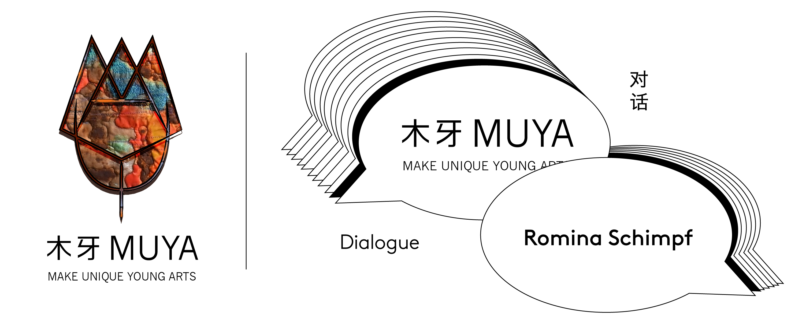欢迎来到木牙Make Unique Young Arts，和我们一起探索有机物与无机物的生命过程～
生物-具有生命活力动能的物体。作为大自然的主宰，具有生存能力和繁殖能力。
非生物-无生命的物质。
事物的开始与结束的中间都有着一个特殊的过程，我们将这个过程称之为“老化”，而时间是人类用来判断物质运动过程的重要参数之一。这就意味着，从我们有意识起，所有物质便开始了属于它们的倒计时。
Romina Schimpf将这个过程称为“生锈”。作为视觉艺术家，她将自己对于大自然以及生命的感悟用纺织品展现了出来。今天让我们和Romina Schimpf一起来到木牙MUYA感悟生物与非生物在不同阶段下不断“生锈”的过程吧！
Lives - objects that have the kinetic energy of life. As the master of nature, it has the ability to survive and reproduce.
Abiotic - an inanimate substance.
There is a special process between the beginning and the end of things, we call this process "aging", and time is one of the important parameters used by human to judge the process of material movement. This means that, from the moment we are conscious, all matter begins its own countdown.
Romina Schimpf calls this process "rusting." As a visual artist, she uses textiles to express her feelings about nature and life. We invited Romina Schimpf at MUYA to learn about the process of living and non-living things "rusting" in different stages.
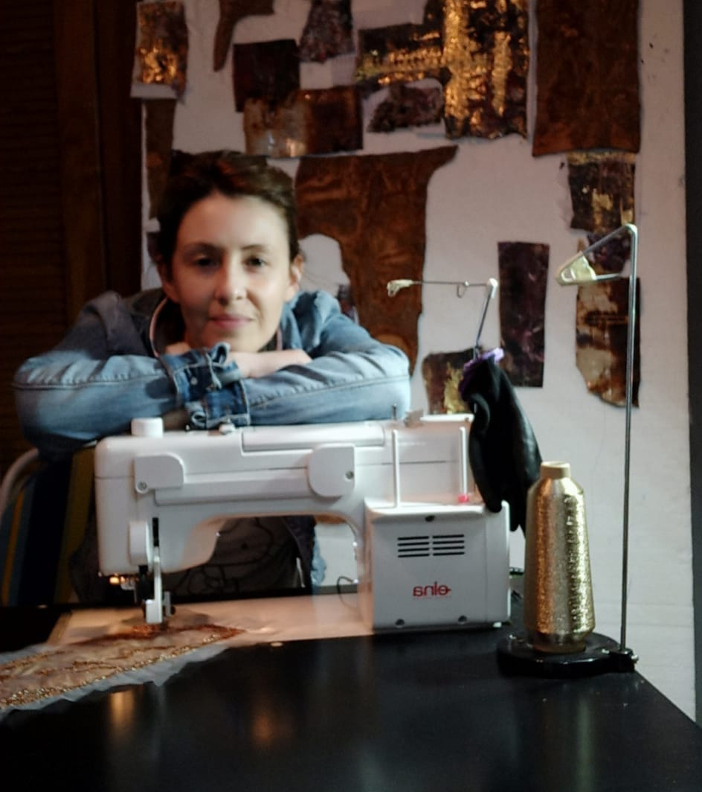
视觉艺术家, 1977年，出生于Misiones (阿根廷)在马拉加大学(西班牙)就读社会工作学位。这种抽象的三维纺织品深受其出生地阿根廷米松尼斯的影响，那里的土壤和岩石的主要特征是由于富含铁的红土矿物的存在而呈现出明显的红色。不仅是这种矿物质的存在和它珍贵的颜色影响和决定了作品，而且这里丰富的植物和动物群，产生了丰富的有机和无机元素的共生关系，它们同时汇聚在一起，在一般生命的不同阶段和过程之间建立一种同质的流动和关系。
Visual artist，Misiones (Argentina) 1977Degree in Social Work, University of Malaga ( spain)The abstract three-dimensional textiles are strongly influenced by their birthplace, Misiones Argentina, where the main characteristic of the soil and rocks is their unmistakable red color due to the presence of iron-rich laterite minerals.Not only the presence of this mineral and its precious color influence and determine the works, but also the exuberant flora and fauna of the place, giving rise to a rich symbiosis of organic and inorganic elements that converge simultaneously to establish a homogeneous flow and relationship between the different stages and processes of life in general.
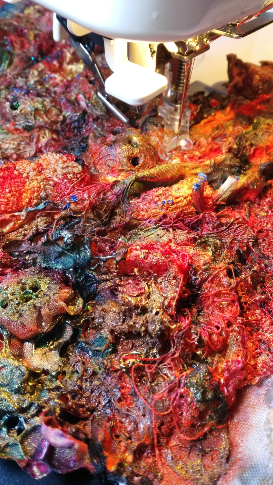

纺织品表达了生命体和非生命体之间的融合，在每一个细节、每一个存在和物体中，自然的重复。每件事都有一个开始，都有一个时间和过程，老化，这在每件作品中本质上都是由生锈决定的。
对于Romina Schimpf 来说构成作品的材料是多样的，不仅根据作品本身来选择，而且要在作品的物质意义、精神层面上与客观统一;这就是为什么金属、植物、纸张、织物、纸织物、颜料，从亚克力到含有金属颗粒的颜料，手工和机器的刺绣线，都与一些坚固而同时又精致的材料(如毡、羊毛、高密度聚乙烯纤维)交织在一起，这些材料是用闪光纺和卢特拉杜尔聚酯纺粘布纺成的。
Textiles express that fusion between living and non-living organisms, that very repetition of nature in every detail, in every being and object. Everything has a beginning and a course in time, aging, which in each work is intrinsically determined by rust.
The materials that make up the works are diverse and are chosen not only according to the piece, but also with the objective to unify in the material sense, the spiritual aspect of the work; That is why metals, plants, papers, fabrics, paper fabrics, paints, from acrylics to those containing metallic particles, embroidery threads by hand and machine are intertwined with strong and at the same time delicate materials such as felts, wool, high-density polyethylene fibers spun with flash and lutradur.
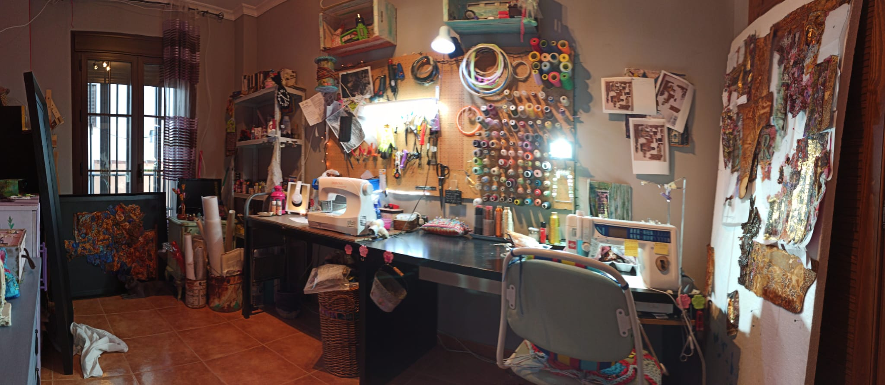
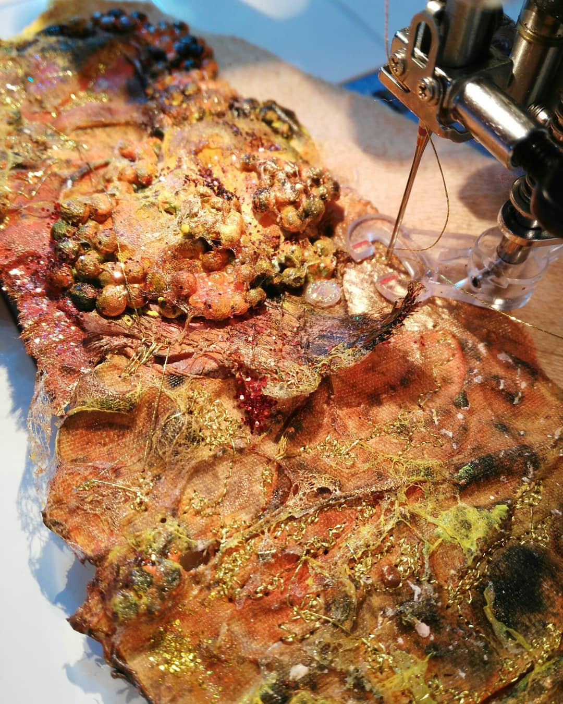

➤ 木牙MUYA: Romina 是如何在创作中思考材料与自然，身份和性别之间的关联的呢？
How does Romina think about the relationship between materials and nature, identity and gender in your art creation?
Romina: 首先，我想感谢您对我的采访，感谢您对我的工作有更多的了解。关于这个问题……我不认为我的性别对我的艺术创作有很大的影响，因为我的作品是以抽象的方式表达有机与无机的生命过程。我的身份影响显著的方式以来的艺术作品与金属氧化染色织物的过程不仅是指生命的力量和恶化,但本质上是与我的出生地在计划阿根廷,地球是氧化的颜色,这是由红土的存在决定的，红土是一种产生这种颜色的黑色矿物。从上面所提到的，我们可以推断出，在我的例子中，物质和自然的关系是必不可少的，因为一个决定另一个，反之亦然。我的作品不仅使用了可回收的有机纺织品，还使用了一系列合成材料和金属材料，这些材料构成了成品的视觉本质。
First of all, I want to thank you for this interview and your interest in knowing more about my work. Regarding the question ... I do not think that my gender significantly influences my artistic production, since my works express the vital process of the organic and inorganic from an abstract approach. My identity does influence in a significant way in the artistic work since the process of dyeing the fabrics with oxidized metals not only refers to the strength and deterioration of life, but is intrinsically related to my place of birth in the Province of Misiones Argentina, where the color of the earth is oxide, which is determined by the presence of laterite, a ferrous mineral that produces this color. From the aforementioned, it can be deduced that, in my particular case, the relationship between materials and nature is essential since one determines the other and vice versa. My works are not only made with recycled organic textiles but also with a series of synthetic and metallic materials that make up the visual essence of the finished work.

➤ 木牙MUYA: Romina的作品充满着不规则的形状和原始颜色的填充，颜色灵感来源于自然，不规则的形状又是怎样抽象的化身呢？
Romina's works are filled with irregular shapes and original colors. The colors are inspired by nature. What is the inspiration of irregular shapes?
Romina: 的确，这些颜色的灵感来自大自然，但也来自那些经历了显著退化过程的物体，在这个过程中，可以观察到真正美丽和令人回味的色调的变化。我的作品的不规则性是有意的，是对生命和物体所经历的生命过程的准确回应，这对每个人都是不一样的。我们都会经历一个独特的人生旅程，留下一个独特的、特别的、不可重复的印记。
Indeed the colors are inspired by nature, but also by objects that undergo a significant deterioration process in which the change of really beautiful and evocative tones can be observed.The irregularity of my works is intentional and responds precisely to that vital process that living beings and objects go through, which is not the same for everyone. We all experience a unique life journey and leave a unique, particular and unrepeatable mark.

➤ 木牙MUYA: 当下艺术创作转向对材料的敏感追求，使得平面画作也开始向立体画作的方向进行创意。Romina怎么样看待，材料性在平面画作和立体画作中的不同呈现的呢？
At present, artistic creation turns to the sensitive pursuit of materials, which makes plane paintings begin to be creative in the direction of three-dimensional paintings. How does Romina feel about the difference in materiality between a planar painting and a three-dimensional painting?
Romina: 这是一个有趣的问题……就我个人而言，我认为这种差异是极端激进的，因为它不仅表达了一种在当代艺术中非常明显的新的时间之旅，而且允许任何人通过视觉来观察一个三维的作品，获得一种更有触感的体验。，也就是说，它是能够用眼睛触摸的。我的作品邀请了这种练习，用所有的感官去思考和观察，这样我的作品的细节鼓励我们在每一个方面停下来，仔细地观察作品的层次，以及一些更深的东西正在那里发生。我觉得观察一幅平面画会产生一定的情感和感觉，但纹理，三维的维度，让我们把一幅作品当作更真实的东西来体验，仿佛展出的东西是实实在在的生活。它超越了寻常，从渴望到可能，能够真正地超越这种视角所赋予的光和影的游戏。
It is an interesting question ... personally I think that this difference is extremely radical since it not only expresses a new temporal journey that is very visible in contemporary art, but also allows whoever observes a three-dimensional work a much more tactile experience through sight. , that is, it is to be able to touch with the eyes. My works invite this exercise, to think and observe using all the senses, in this way the detail of my work encourages us to stop at each aspect of it and see carefully the layers of work, and that something deeper is happening there. I feel that observing a flat painting produces certain emotions and sensations, but the textures, the three-dimensional dimensions, invite us to experience a work as something more real, as if what was exhibited came to tangible life. It is transcending the usual and traveling from what is desired to what is possible, being able to really feel beyond the play of light and shadow that perspective gives.

➤ 木牙MUYA: Romina每一幅的创作尺寸还是很大的，看到技术中有应用绣花机和手工结合进行创作。Romina如何看待现代化时代，机械工作对于当代艺术的介入的呢？
The creation size of each piece of Romina is still very large. We can see that there is a combination of embroidery machine and handwork in the technology of creation. How does Romina view the involvement of mechanical work in contemporary art in the modern era?
Romina: 技术或机制的含义在艺术创作中非常重要，因为它能够表达并创造艺术家想象中的内容。在我的案例中，我使用了各种不同的创作方法，每一个作品都是不同的，因为每一个作品都是独特的，我介绍了手工和机械。这也取决于我在作品中使用的材料，目前我的作品中包含了大量的金属，这迫使我手工塑造并将这些元素融入到纺织品中。缝纫机对于我来说就像画笔对于画家一样，它让我把作品中不同元素的颜色统一起来。
The implication of technology or mechanics that help when doing artistic is fundamental because it allows to express and be able to create what is in the artist's imagination. In my case I use various methods of creation, all different in each work since each work is unique, I introduce both manual work and machinery. This also depends on the materials I use for the work, currently I work on a work that incorporates a lot of metal, which forces me to work manually molding and adapting said element to the textile. The sewing machine is for me like the brush for a painter, it is what allows me to unify with the embroidery all the colors of the different elements that are part of the work.


➤ 木牙MUYA: Romina的作品中有留白的部分，也有着细腻的空间布局。Romina是如何看待二维作品里关于空间布局的重要性？
Romina's work has a blank space and a delicate spatial layout. How does Romina view the importance of spatial layout in two-dimensional works?
Romina: 从一般意义上说，空间是一个物理概念，其中存在着现象性的现实，我喜欢相信我的作品的精神超越了这个一般概念，即精神和物质，是我作品中存在的东西的容器。也就是说，我的作品的概念不仅仅是精神层面的，而是通过占据一个三维或二维的空间，超越了与观者直接的生死关系。这个设计和占用的空间赋予了真实的存在感，由于空间设计的重要性，抽象得以具体化。
In a general sense, space is a physical notion where phenomenal reality is located and I like to believe that the spirit of my work transcends that general concept, which is both spiritual and material, the receptacle of what exists in my work. That is to say, the concept of my work is not only in a spiritual sense, but, by occupying a three-dimensional or two-dimensional space, it transcends a direct vital relationship with the observer. This designed and occupied space gives real presence, the abstract materializes thanks to the importance of spatial design.

➤ 木牙MUYA: Romina的作品相似性极高，Romina是如何定义每个作品背后的不同？如何在原有基础上做出突破？
Romina's works are very similar. How does Romina define the differences behind each work? How to make a breakthrough on the original basis?
Romina: 也许让我的作品看起来一样的是铁布的使用，这是我喜欢称之为氧化金属染色的纺织品，但每一件作品都有自己的本质，每一件作品都有一个独特的印记。我总是从一个原始的概念(生命的过程)开始，这个概念在艺术创作中不断扩展，并统一到成品中。因此，在同一作品中，我总是谈到生命的力量，谈到生命的退化，但不仅是在生物的意义上，而且是在无机的方面，从而使这两种概念都以一种抽象的、独特的方式加以表达和表现。在原始基础上的进步在某种程度上取决于预先建立的概念，结合了直观的方法和绝对的创作自由。
What perhaps makes my works look the same is the use of iron cloth, which is what I like to call textile dyed with oxidized metals, but each work has its own essence, each work is born from a unique imprint. I always start from a primal concept (the vital process) that expands during artistic making and is unified in the finished work. Thus, in the same work, I always speak of the force of life, of the deterioration of life, but not only in a biological sense but also in an inorganic aspect, leading both notions to be expressed and represented in an abstract way in unique ways. The advance on the original base is in a certain way subject to the work on a pre-established concept that is combined with an intuitive approach and absolute creative freedom.
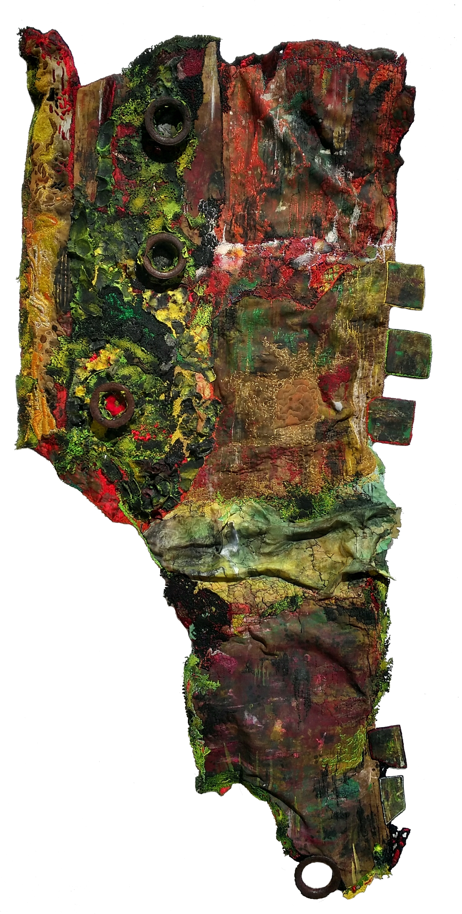
➤ 木牙MUYA: 材料的应用一直是艺术作品中的大热门。Romina所使用的布料以及羊毛等都来自于大自然。相比于讨论自然的馈赠，Romina是如何理解现在的新型材料在二维作品中的应用的？例如导电的特殊纤维等。
The use of materials has always been a hot topic in art. Romina uses fabrics and wool that come from nature. Instead of discussing the gifts of nature, how does Romina understand the application of new materials in two-dimensional works?
Romina: 例如，导电的特殊纤维)。我相信艺术家有一种与生俱来的不破坏的创造能力，也就是说，作品所用的材料几乎都是重复使用的。新材料的应用,我认为是一个非常个人的决定,这是一个亲密的艺术家和作品之间的联盟,在我的例子中,我使用了大量不同的材料从面料、纤维、线程、各种各样的报纸,聚乙烯类,氧化金属和恢复等每个人都必须告诉的故事,它的精神。只要能上班，我不怕使用任何材料。我会担心我不能看到一些材料的潜力，失去试验它的可能性，并获得真正美丽的东西。
For example, special fibers that conduct electricity). I believe that the artist has the innate facility to create without destroying, that is to say that the materials used are almost always reused for the making of the work. The application of new materials I think is a very personal decision, it is an intimate alliance between artist and work, in my case, I use a huge diversity of materials ranging from fabrics, fibers, threads, papers of all kinds, polyethylenes, oxidized metals and restored etc. everyone must tell the story in the play, the spirit of it. I am not afraid to use any material as long as I get to work. I would fear that I would not be able to see the potential of some material and lose the possibility of experimenting with it and obtaining something really beautiful.
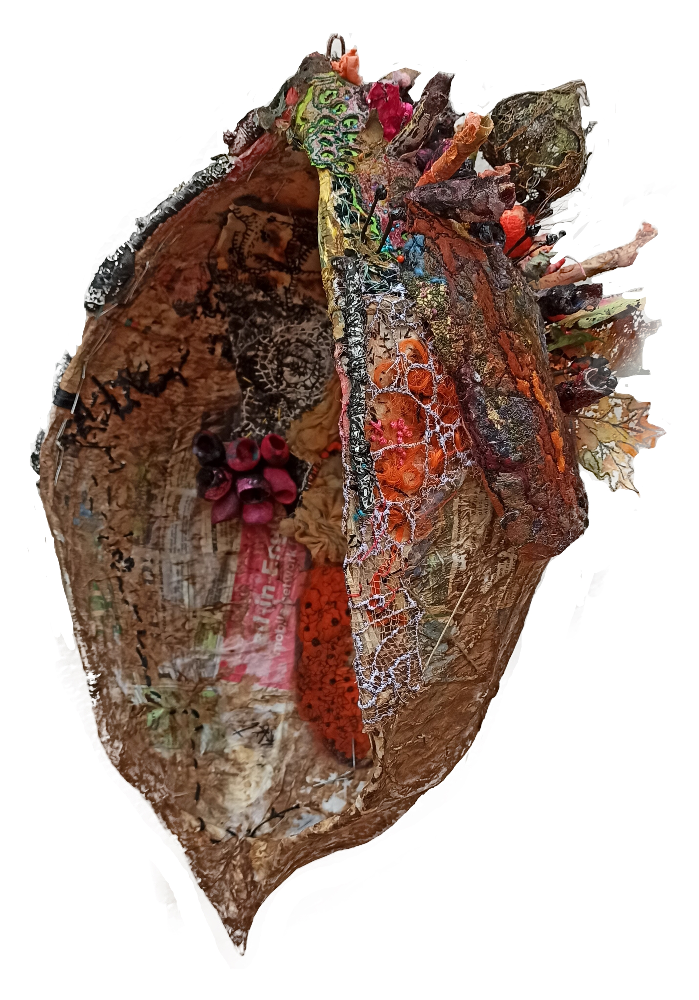
➤ 木牙MUYA: Romina最近在读什么书？有哪些关于材料应用在艺术领域的书籍是值得给我们推荐的？
What is Romina reading recently? What books about the application of materials in the field of art are worth recommending to us?
Romina: 这对我来说是一个非常困难的问题，因为我没有读过艺术文学，所以我更喜欢尝试各种材料，并从中获得乐趣。当我不再享受尝试新材料和新技术的乐趣时，我的创造力就会受到影响。我不推荐艺术文学，但我推荐尽可能多地观察自然，观察它的运动，从中学习，让自己沉浸其中，尝试和玩耍，激发内在的童心，让一切理所当然，让每个艺术体验都个性化，最重要的是，一定要从概念入手。
This is a really difficult question for me since I don't read artistic literature, in this sense I prefer to experiment with all kinds of materials and have fun in the process. It is when I stop having fun experimenting with new materials and techniques that my creativity suffers. I cannot recommend artistic literature, but I can recommend observing nature as much as possible and seeing its movement, learning from it and letting yourself be carried away, experimenting and playing, bringing out the inner child and resignifying everything taken for granted, making each artistic experience personal and above all, always work from a concept.
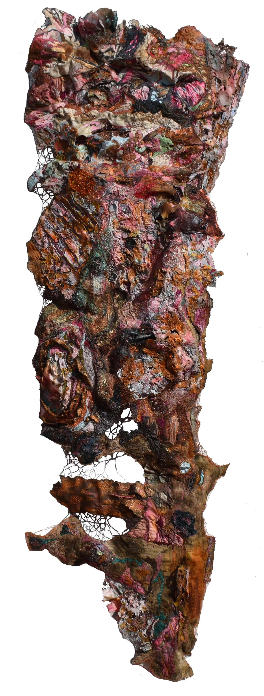
✯ Which inspire your works most ✯
“we ignore our true stature until we stand up" -- Emily Dickinson
“只有站起来，我们才会忽视自己真正的地位” -- 艾米莉·狄金森
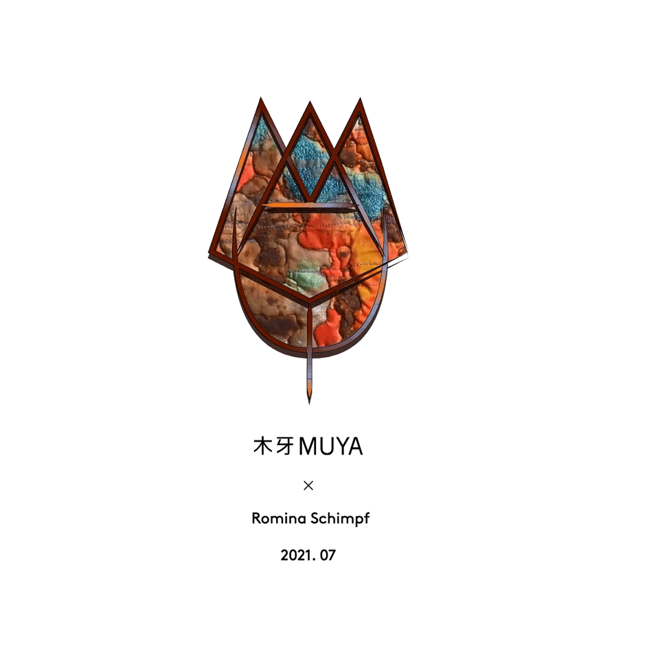
✤ Romina Schimpf网站（Romina Schimpf Website)
✤ Romina Schimpf INS：@romina_schimpf_art
✤ Romina Schimpf邮箱（Romina Schimpf Email)：rominaschimpf@yahoo.com
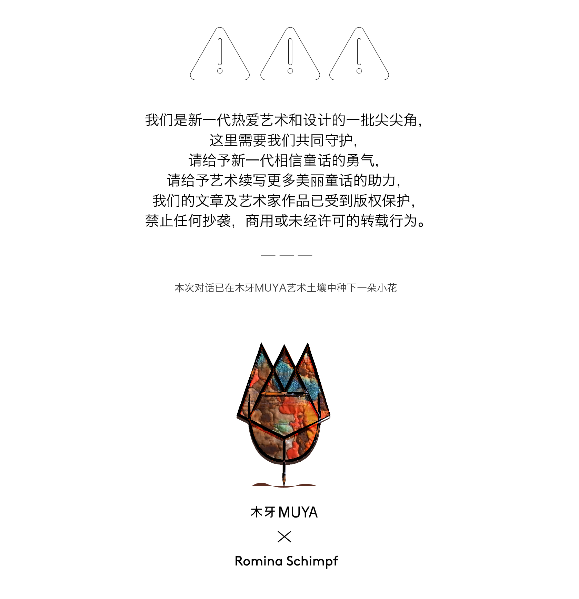
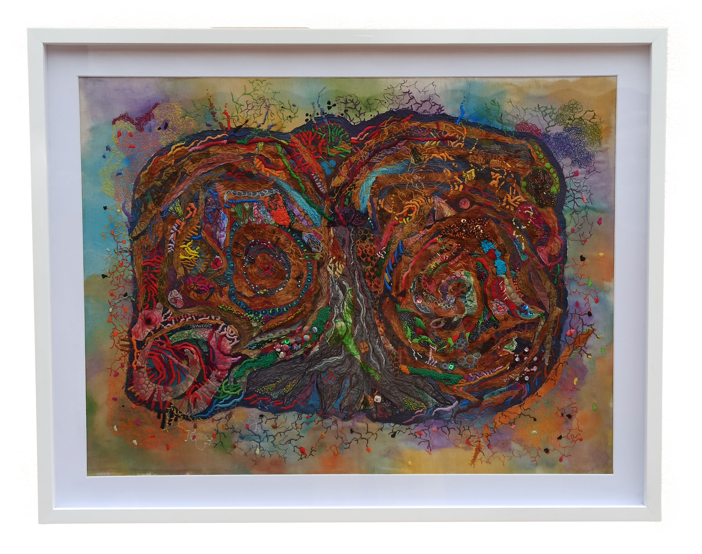
木牙微信订阅号